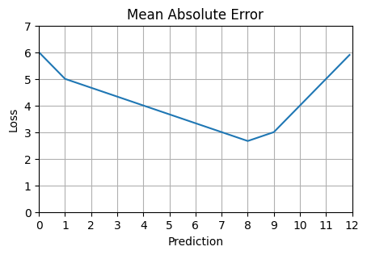
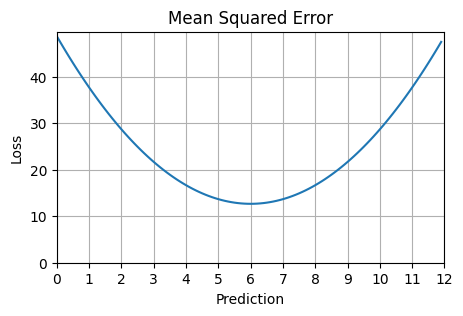

import matplotlib.pyplot as plt
import numpy as np
from sklearn.metrics import mean_absolute_error, mean_squared_error
plt.rcParams["figure.facecolor"] = (1, 1, 1, 0) # RGBA tuple with alpha=0
plt.rcParams["axes.facecolor"] = (1, 1, 1, 0) # RGBA tuple with alpha=0Loss Functions
Mean Absolute Error (L1 Loss)
def calc_loss_one_pred(loss_function, actuals, pred):
preds_array = np.full(actuals.shape, pred)
loss = loss_function(actuals, preds_array)
return loss
def plot_loss(loss_function, actuals, possible_preds) -> None:
loss = [calc_loss_one_pred(loss_function, actuals, pred) for pred in possible_preds]
fig, ax = plt.subplots(figsize=(5, 3))
ax.plot(possible_preds, loss)
ax.set_xlim(0, possible_preds.max())
ax.set_xticks(np.arange(0, possible_preds.max() + 1, 1))
ax.set_xlabel("Prediction")
ax.set_ylim(0, max(loss) + 1)
ax.set_ylabel("Loss")
ax.set_title(loss_function.__name__.replace("_", " ").title())
ax.grid(True)
plt.show()
actuals = np.array([1, 8, 9])
possible_preds = np.arange(0, 12, 0.1)plot_loss(mean_absolute_error, actuals, possible_preds)
def utility_function(inventory, demand):
if demand >= inventory:
return -3 * (demand - inventory)
else:
return demand - inventory
print(f"Loss from stocking 6 when demand is 1: {utility_function(6, 1)}")
print(f"Loss from stocking 6 when demand is 8: {utility_function(6, 8)}")
print(f"Loss from stocking 6 when demand is 9: {utility_function(6, 9)}")Loss from stocking 6 when demand is 1: -5
Loss from stocking 6 when demand is 8: -6
Loss from stocking 6 when demand is 9: -9Mean Squared Error
plot_loss(mean_squared_error, actuals, possible_preds)
One way in which mean absolute and mean squared error differ is that MAE leads your model to predict the median of the distribution while MSE leads your model to predict the mean of the distribution.
TODO: proof of this